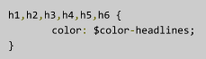
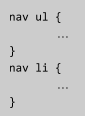
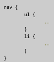
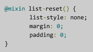

Sass
Create a sass folder in the assets folder
In the sass folder, create a styles.scss file. This will be your main Sass styling file and will only contain import statements when we’re done.
Copy everything from your styles.css file into styles.scss (Hint: use ctrl-a (windows) or cmd-a (macs) to select everything in your file)
Rename your styles.css file to originalstyles.css as we’ll be overwriting this css file when we compile our Sass and it will be neat to compare the two later.
Replace hex and rgba color codes with Sass variables
Create a _variables.scss file in your assets/sass folder. This will be where all of our variables that we will use will exist.
At the very top of your styles.scss file you’ll need to import the variables file so type in
@import “variables”;
- Add variables to the _variables.scss file. Remember these start with a $ followed by the variable name.
Examples:
$color-main: #F9A1BC; $color-accent: #A9EEE6;
- In the places in your styles.scss file where you reference these colors change out the hex value (#F9A1BC) with your variable name ($color-main)
Now our styling might look similar to this:

- Save the Sass files.
- Now we need to compile our Sass into CSS. In the command line type:
sass assets/sass/styles.scss assets/css/styles.css
- Go to Chrome and refresh your page. If you’ve used the same colors it should look exactly the same but now you only have one place to change a color instead of spread throughout your CSS file! If you want to see the “magic” switch one of the color variables maybe to white (#FFFFFF), re-run your sass command and then refresh your page.
Next, let’s change the font stacks to use variables such as $font-headers and $font-body.
Follow the same process as above adding variables, setting the values and replacing the font stacks in your css to use the variables you created. Don’t forget to compile like we did in step 5f above and then refresh your page in the browser!
Use nesting to simplify your stylesheet - remember not to go more than 3-4 levels deep though!
In places where you have parent-child selectors, nest the child selectors inside the parent class or element.
- For example instead of:
 You might have this:

That way you don’t have to repeat nav in front of the child ul and li elements. Similar to the way you nest your html elements you can now organize your Sass file with nesting.
- Save the Sass files.
- In the command line type
sass assets/sass/styles.scss assets/css/styles.css
- Open up your assets/css/styles.css file in Sublime Text and notice how the nested sass compiles to the parent-child selectors.
Go to Chrome and refresh your page. It should still look the same.
Let’s try a mixin now! We can use one for list styling, let’s call it list-types.
Create a _mixins.scss file in the assets/sass folder
- Add your mixin to the file - this is adding a “function” to set the three properties list-style, margin and padding anytime this mixin is used in your Sass file:

- In your styles.scss file replace any styling where you set those three items (likely in your navigation, product list and footer elements) with:
@include list-reset();
- Save both _mixins.scss and styles.scss
- In the command line type:
sass assets/sass/styles.scss assets/css/styles.css
- Go to Chrome and refresh your page. It should again look the same. Replacing your CSS with Sass may not look very exciting but it reduces duplication in your code and makes it easier for you to change and maintain the code going forward!
You will typically just use Sass from the start instead of doing the translation from CSS but we wanted you to see the differences between the two types of styling.
We’ll want to make sure we have our code organized as well so create a separate file for each section of your css such as the reset, nav, main and the footer. You’ll end up with “partials” for each section (_reset.scss, _nav.scss, etc.)
Remove the relevant CSS from styles.scss and place it in each partial - Nav styling goes in _nav.scss, the main content (product list and customer favorites) goes in _main.scss, etc.
- Import each partial file into your main styles.scss, for example:
@import “nav”;
Save all of your files, compile with the
sasscommand in the command line then refresh view your page in the browser.Feel free to try out any more of the Sass concepts we discussed tonight using the same process.
Compare your initial css file with the generated css file. They should be almost identical.
In Sublime Text highlight the originalstyles.css file then use ctrl (windows) or cmd (macs) + click on styles.css
- Right click on one of the highlighted filenames and choose “Diff Files…”
This will open a new tab showing the differences (if any) between the two files.
Compare your styles.sass with our answer key here: bit.ly/CnCSassKey. It may not be exact but will give you an idea on what your Sass may look like.
Congratulations! You’ve just styled a webpage using a CSS Compiler!